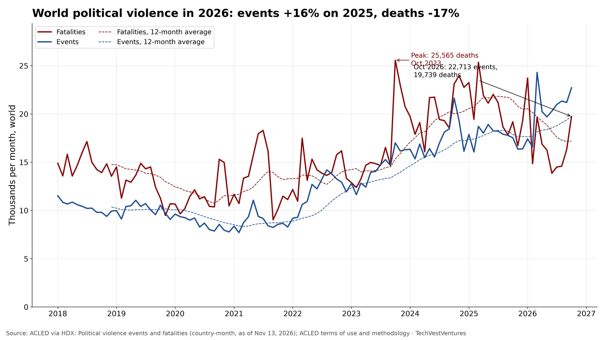
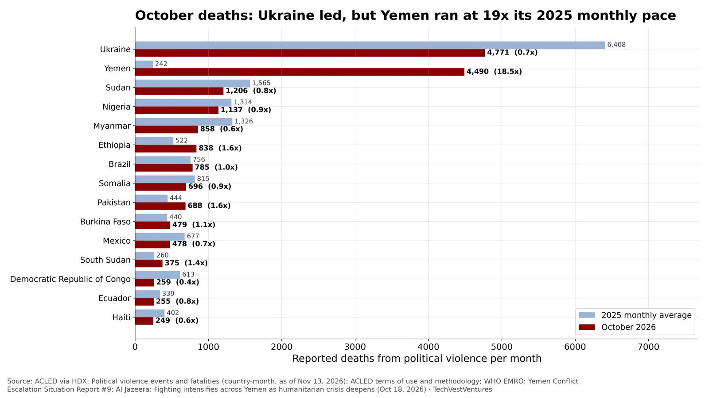

Q11. Violence Pulse

Monthly totals of political violence recorded by ACLED worldwide (battles, explosions and remote violence, violence against civilians, and mob violence), January 2018 to October 2026. October 2026 had 22,713 events and 19,739 reported deaths. In the first ten months of 2026 the monthly averages were 20,472 events and 17,032 deaths, against 17,661 and 20,493 in 2025. The deadliest month in the series was October 2023 with 25,565 deaths. Events have trended up for years while deaths have not, which partly reflects wider coverage: ACLED has added sources and countries over time, so the event line overstates how much the world has really changed. Fatality figures are the most conservative reported estimates and are often revised. November 2026 is left out because the file runs only to mid-month.
- Calendar years (events / deaths): 2018 124,257 / 177,080; 2019 121,054 / 153,006; 2020 103,513 / 138,174; 2021 105,861 / 159,094; 2022 144,282 / 169,920; 2023 171,760 / 198,134; 2024 206,571 / 243,323; 2025 211,937 / 245,921; 2026 through October 204,717 / 170,325.
- In this HDX series political violence means ACLED's battles, violence against civilians and explosions/remote violence, plus the mob-violence sub-type of riots; peaceful and most violent protests are counted separately as demonstrations.
- Counts are ACLED's, redistributed on HDX under ACLED's terms of use; ACLED data are revised as new reports arrive.
Sources: ACLED via HDX: Political violence events and fatalities (country-month, as of Nov 13, 2026) ACLED terms of use and methodology

The 15 countries with the most reported political-violence deaths in October 2026, from ACLED, set against each country's 2025 monthly average. Ukraine led with 4,771. Ratios above 1 mean October was deadlier than a typical 2025 month. Yemen stands out: ACLED recorded 4,490 deaths there in October against a 2025 average of 242, as the government's offensive against the Houthis on the Taiz, Lahj and Marib fronts escalated; Yemen's health emergency centre counted 1,677 deaths and 7,395 injuries since the escalation began, as of Oct 25 (WHO situation report). Most other large conflicts, including Ukraine, Sudan and Myanmar, were less deadly in October than their 2025 average. Single-month counts swing with one large battle or massacre, so a high ratio is a flag to watch, not a trend. ACLED counts are conservative and depend on media and partner reporting, which is thin in places such as Sudan, Myanmar and the Sahel, so true tolls there are likely higher.
- Ukraine: October 4,771 vs 2025 average 6,408 (0.7x)
- Yemen: October 4,490 vs 2025 average 242 (18.5x)
- Sudan: October 1,206 vs 2025 average 1,565 (0.8x)
- Nigeria: October 1,137 vs 2025 average 1,314 (0.9x)
- Myanmar: October 858 vs 2025 average 1,326 (0.6x)
- Ethiopia: October 838 vs 2025 average 522 (1.6x)
- Brazil: October 785 vs 2025 average 756 (1.0x)
- Somalia: October 696 vs 2025 average 815 (0.9x)
- Pakistan: October 688 vs 2025 average 444 (1.6x)
- Burkina Faso: October 479 vs 2025 average 440 (1.1x)
- Mexico: October 478 vs 2025 average 677 (0.7x)
- South Sudan: October 375 vs 2025 average 260 (1.4x)
- Democratic Republic of Congo: October 259 vs 2025 average 613 (0.4x)
- Ecuador: October 255 vs 2025 average 339 (0.8x)
- Haiti: October 249 vs 2025 average 402 (0.6x)
Sources: ACLED via HDX: Political violence events and fatalities (country-month, as of Nov 13, 2026) ACLED terms of use and methodology WHO EMRO: Yemen Conflict Escalation Situation Report #9 Al Jazeera: Fighting intensifies across Yemen as humanitarian crisis deepens (Oct 18, 2026)